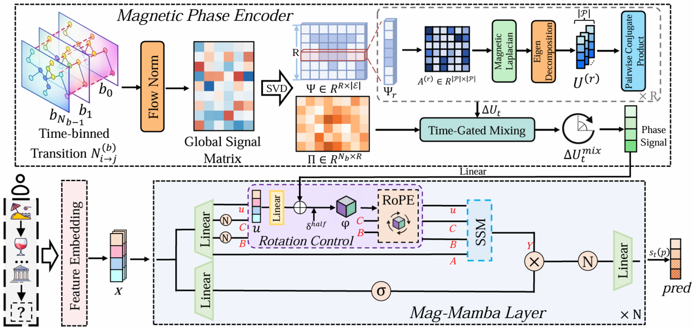
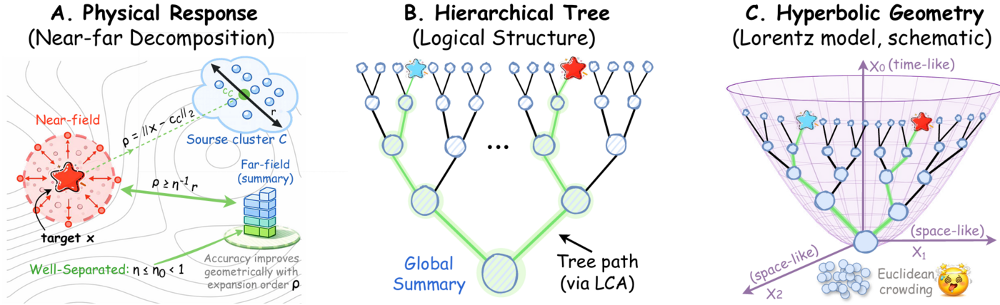
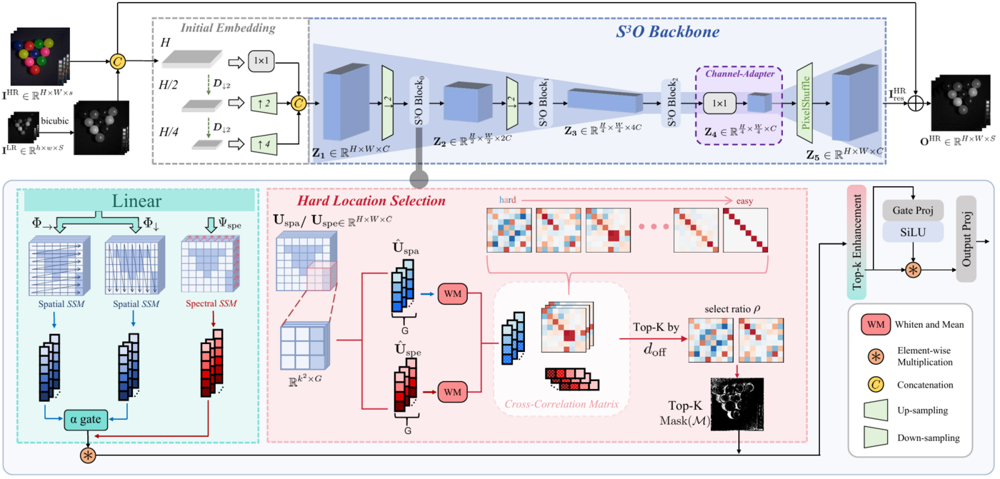
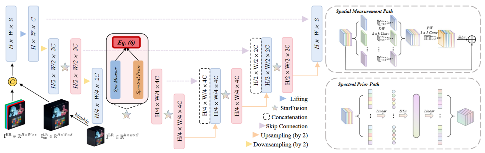

Mag-Mamba: Modeling Coupled Spatio-temporal Asymmetry for POI Recommendation
Our paper "Mag-Mamba: Modeling Coupled Spatio-temporal Asymmetry for POI Recommendation" was accepted by KDD 2026.

Our paper "Mag-Mamba: Modeling Coupled Spatio-temporal Asymmetry for POI Recommendation" was accepted by KDD 2026.

Our paper "Hyperbolic Neural Operator" was accepted by ICML 2026.

Our paper "S3O: Selective Spatial-Spectral Operator for Cross-Scale Fusion" was accepted by CVPR 2026.

Our paper "Asymmetric StarFus: Learning Incoherent Measurements for Semantics-Aware Spatial-Spectral Fusion" was accepted by ICASSP 2026.

Undergraduate student in Data Science and Big Data Technology, College of Computer Science and Technology.
DataLab, School of Information.